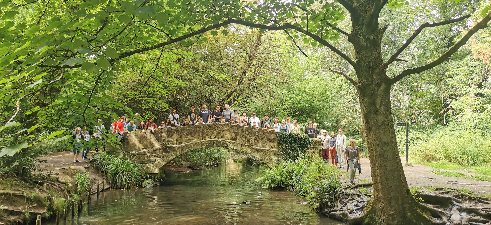
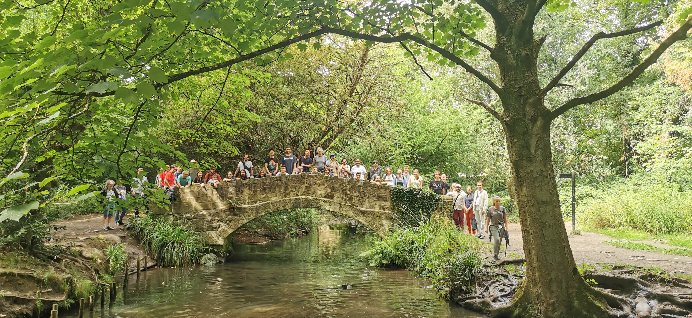
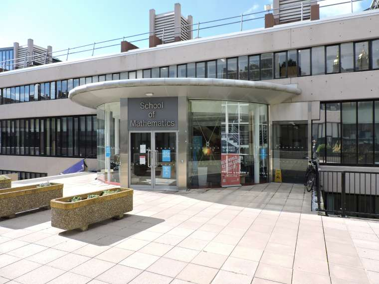
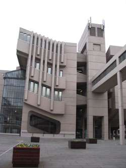

Workshop: Practical and Structural Model Theory
Leeds, July 25-29, 2022


Workshop: Practical and Structural Model Theory
|
|
|
|
|
 

- on the occasion of the 60th birthdays of Ya'acov Peterzil and Sergei StarchenkoScope:
The workshop is planned to take place during the second week of the 3-week program Unimod 2022.  Photo Album!
Playlist of all recorded lectures available! *** Rail Strike Alert *** A google map with all central places relevant to the workshop can be found here. The PS workshop is going hybrid. If you are a registered participant you will receive the Zoom link a few days before the start of the event. Otherwise, you may contact the organisers at the email address below.
Photo Album!
Playlist of all recorded lectures available! *** Rail Strike Alert *** A google map with all central places relevant to the workshop can be found here. The PS workshop is going hybrid. If you are a registered participant you will receive the Zoom link a few days before the start of the event. Otherwise, you may contact the organisers at the email address below.For any information, please contact: ps.workshop2022@gmail.com |
 |
Playlist of all recorded lectures available! Tsimerman's talk has been rescheduled for today (Friday 29/07) at 16:45. Slight schedule change concerning the talks by Chernikov, Hrushovski, Edmundo. Updated program below.
Model theory of o-minimal structures:
- Elías Baro (Universidad Complutense de Madrid) Video Slides
- Alessandro Berarducci (University of Pisa) Video Slides
- Annalisa Conversano (Massey University) Video Slides
- Mario Edmundo (University of Lisbon) Video Slides
- Jana Marikova (University of Vienna) Slides
- Dave Marker (University of Illinois at Chicago) Video Slides
- Anand Pillay (University of Notre Dame) Video Slides
- Charles Steinhorn (Vassar College) Video Slides
Interactions and applications of o-minimality:
- Matthias Aschenbrenner (University of Vienna) Video Slides
- Gal Binyamini (Weizmann Institute of Science) Video
- Lou van den Dries (University of Illinois at Urbana-Champaign) Video Slides
- Gareth Jones (University of Manchester) Video Slides
- Chris Miller (Ohio State University) Video
- Jonathan Pila (University of Oxford) Video Slides
- Tamara Servi (Université Paris-Cité) Video
- Patrick Speissegger (McMaster University) Video Slides
- Jacob Tsimerman (University of Toronto) Video
Model theoretic generalizations:
- Artem Chernikov (University of California at Los Angeles) Video Slides
- Deirdre Haskell (McMaster University) Video Slides
- Philipp Hieronymi (University of Bonn) Video Slides
- Ehud Hrushovski (University of Oxford) Video Slides
- Rahim Moosa (University of Waterloo) Video
- Katrin Tent (University of Münster) Video Slides
- Boris Zilber (University of Oxford) Video Slides
|
A google map with all central places relevant to the workshop can be found here. A university campus map can be found here. School of Mathematics University of Leeds Leeds LS2 9JT |
 |
| Travel Info | |
|---|---|
| Arriving at Leeds |
The closest airports are the Leeds Bradford Airport (LBA) and the Manchester Airport (MAN). The Leeds Bradford Airport has a Flyer service (A1) taking you to the city centre, more info on the LBA website. The Manchester Airport has a train station and a coach station: a trip to Leeds takes between 1 and 2 hours, tickets for both can be bought online (e.g. via the trainline app), or at the stations. Make sure your flight time is consistent with the train/coach times as there may be no services between 1am and 4am. Uber would cost about 90 pounds. |
| Once in Leeds | Reaching the University campus from the train station on foot takes about 20 minutes whereas from the coach station about 30 minutes; you may consider taking a bus: tickets can be bought online via the trainline app. Uber is a good alternative with cost about 5 pounds. |
| Venues | |
|---|---|
Mathematics Building (School of Mathematics):Registration will happen at the School of Mathematics reception, on Level 9 of this building. Coffee breaks will be offered on Level 9 too. Participants are encouraged to use spaces both on Level 9 and on Level 8 (such as the MALL) of the School of Mathematics for individual study, discussions and collaborations. |
 |
Roger Stevens Building (General Teaching Space):Lectures will take place in Lecture Theater 20 on Level 7+. Level 10 of the building is reachable from Level 10 of the Mathematics Building through a connecting bridge (there will be signs along this route). Other entrances are on lower ground (Level 6) and ground floor (Level 7). |
 |
The Refectory (Main Campus Cafeteria): The Refectory, along with other various food shops, is located in the University Union Building. It is the main campus cafeteria that serves breakfast and lunch. For an in-depth analysis of their opening hours and menus, as well as for other campus dining optinos, please visit the website below. |
 |
You may register
here by April 15, 2022.
The default arrival - departure dates are July 24 - 30, 2022 (the lectures will begin on July 25 in the morning and end on July 29 in the afternoon).
| Pablo Andujar Guerrero | Fields Institute, Canada |
| Matthias Aschenbrenner | University of Vienna, Austria |
| Vahagn Aslanyan | University of East Anglia, UK |
| Vincent Bagayoko | Université de Mons, Belgium |
| Robert Barham | Imperial College London, UK |
| Elías Baro | Universidad Complutense de Madrid, Spain |
| Martin Bays | Universität Münster, Germany |
| Alessandro Berarducci | University of Pisa, Italy |
| Thomas Bernert | University of Leeds, UK |
| Neer Bhardwaj | University of Illinois at Urbana-Champaign / MSRI, USA |
| Gal Binyamini | Weizmann Institute of Science, Israel |
| Elisabeth Bouscaren | CNRS - Université Paris-Saclay, France |
| Andrew Brooke-Taylor | University of Leeds, UK |
| Zoe Chatzidakis | École Normale Supérieure de Paris, France |
| Artem Chernikov | University of California at Los Angeles, USA |
| Derya Çıray | Independent |
| Annalisa Conversano | Massey University Auckland, New Zealand |
| Paola D'Aquino | Università della Campania "L. Vanvitelli", Italy |
| Christian d'Elbée | Fields Institute, Canada |
| Ben de Smet | University of Leeds, UK |
| Anna Dmitrieva | University of East Anglia, UK |
| Jan Dobrowolski | University of Manchester, UK |
| Lou van den Dries | University of Illinois at Urbana-Champaign, USA |
| Christine Eagles | University of Waterloo, Canada |
| Mário Edmundo | University of Lisbon, Portugal |
| Ioannis Eleftheriadis | University of Cambridge, UK |
| Pantelis Eleftheriou | University of Leeds, UK |
| Katie Ellman-Aspnes | University of Notre Dame, USA |
| Felipe Estrada Pelaez | Universidad de Los Andes, Colombia |
| Sebastian Eterovic | UC Berkeley, USA/University of Leeds, UK |
| Florian Felix | HHU Düsseldorf, Germany |
| Guy Fowler | Leibniz University Hannover, Germany |
| Pietro Freni | University of Leeds, UK |
| Francesco Gallinaro | University of East Anglia, UK |
| Misha Gavrilovich | IPRERAS, Russia |
| Kyle Gannon | University of California at Los Angeles, USA |
| Stuart Green | University of Leeds, UK |
| James Hanson | University of Maryland, College Park, USA |
| Andrew Harrison-Migochi | University of Manchester, UK |
| Deirdre Haskell | McMaster University, Canada |
| Assaf Hasson | Ben Gurion University, Israel |
| Yuyan He | University of California at Los Angeles, USA |
| Philipp Hieronymi | University of Bonn, Germany |
| Akash Hossain | Université Paris-Saclay, France |
| Jordan Houser | Independent |
| Ehud Hrushovski | University of Oxford, UK |
| Abdelrahman Ibrahim | American University in Cairo, Egypt |
| Grzegorz Jagiella | Uniwersytet Wrocławski, Poland |
| Chuyin Jiang | University of California at Los Angeles, USA |
| Gareth Jones | University of Manchester, UK |
| Tobias Kaiser | Universität Passau, Germany |
| Moshe Kamensky | Ben Gurion University, Israel |
| Itay Kaplan | Hebrew University of Jerusalem, Israel |
| Charlotte Kestner | Imperial College London, UK |
| Joonhee Kim | Yonsei University, South Korea |
| Thibaut Kouptchinsky | UCLouvain, Belgium |
| Krzysztof Krupinski | Uniwersytet Wrocławski, Poland |
| Junguk Lee | KAIST, South Korea |
| Omar Leon Sanchez | University of Manchester, UK |
| Stefan Ludwig | École Normale Supérieure de Paris, France |
| Dugald Macpherson | University of Leeds, UK |
| Vincenzo Mantova | University of Leeds, UK |
| Jana Marikova | University of Vienna, Austria |
| Paolo Marimon | Imperial College London, UK |
| David Marker | University of Illinois at Chicago, USA |
| Raymond McCulloch | University of Manchester, UK |
| Silke Meißner | Universität Münster, Germany |
| Nadav Meir | University of Wroclaw, Poland |
| David Meretzky | University of Notre Dame, USA |
| Chris Miller | Ohio State Unversity, USA |
| Shezad Mohamed | University of Manchester, UK |
| Ibrahim Mohammed | University of Leeds, UK |
| Rahim Moosa | University of Waterloo, Canada |
| Isabel Müller | The American University in Cairo, Egypt |
| Alf Onshuus | Universidad de Los Andes, Colombia |
| Adele Padgett | University of California at Berkeley, USA/McMaster University, Canada |
| Ricardo Jesús Palomino Piepenborn | University of Manchester, UK |
| Aris Papadopoulos | University of Leeds, UK |
| Davide Penazzi | University of Central Lancashire, UK |
| Ya'acov Peterzil | University of Haifa, Israel |
| Jonathan Pila | University of Oxford, UK |
| Anand Pillay | University of Notre Dame, USA |
| Santiago Pinzon | Universidad de Los Andes, Colombia |
| Adrián Portillo | University of Wroclaw, Poland |
| Nigel Pynn-Coates | Ohio State Unversity, USA |
| Davide Emilio Quadrellaro | University of Helsinki, Finland |
| Serge Randriambololona | Independent |
| Tsinjo Rakotonarivo | WWU Stellenbosch University, South Africa |
| Simone Ramello | WWU Münster, Germany |
| Nick Ramsey | University of California at Los Angeles, USA |
| Calliope Ryan-Smith | University of Leeds, UK |
| Tomasz Rzepecki | Uniwersytet Wrocławski, Poland |
| Thomas Scanlon | University of California at Berkeley, USA |
| Ilgwon Seo | Yonsei University, South Korea |
| Tamara Servi | Université Paris-Cité, France |
| Daoud Siniora | American University in Cairo, Egypt |
| Patrick Speissegger | McMaster University, Canada |
| Sergei Starchenko | University Notre Dame, USA |
| Charles Steinhorn | Vassar College, USA |
| Benedikt Stock | University of Oxford, UK |
| Michal Szachniewicz | University of Oxford, UK |
| Nazanin Roshandel Tavana | Amirkabir University of Technology, Iran |
| Katrin Tent | Universität Münster, Germany |
| Giuseppina Terzo | Università degli Studi di Napoli "Federico II", Italy |
| Margaret Thomas | Purdue University, USA |
| Mervyn Tong | University of Cambridge, UK |
| Pierre Touchard | Universitá degli Studi della Campania "L. Vanvitelli", Italy |
| Jacob Tsimerman | University of Toronto, Canada |
| Olzhas Umbetbayev | Institute of Mathematics and Mathematical Modeling, Kazakhstan |
| Paul Wang | École Normale Supérieure de Paris, France |
| Francis Westhead | University of Oxford, UK |
| Alex Wilkie | University of Manchester/Oxford, UK |
| Aisha Yershigeshova | Suleyman Demirel University, Kazakhstan |
| Tatyana Zambarnaya | Institute of Mathematics and Mathematical Modeling, Kazakhstan |
| Kevin Zhou | University of Illinois at Chicago, USA |
| Boris Zilber | University of Oxford, UK |
| Tingxiang Zou | Universität Münster, Germany |
The workshop is made possible thanks to the kind support of the EPSRC, the Leeds School of Maths, the ASL and the NSF.
Student members of the ASL may apply for student travel awards following the guidelines mentioned here.
US-based participants may apply for a limited number of travel awards by writing to: ps.workshop2022@gmail.com
{kind=link}